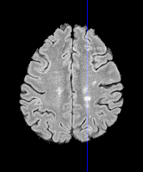

Automated Segmentation of
Simon Andermatt, Simon Pezold, Philippe Cattin
Learning to Segment
Data:
Goal:
What is Segmentation about? We are given a set of images and corresponding labels, and we want to use these to train the parameters of a function such that we can map new data to their corresponding labels. This function is in our case a neural network. The images you see here are from the longitudinal MS lesion segmentation challenge and we used them for all our experiments.
RNN / GRU
The main building blocks of our network are recurrent neural networks. RNNs are designed to process sequences, as can be seen in the above picture. At each point in the sequence, it takes the input and the previous output of the RNN to create a new output at that point. We are using gated recurrent units, a special type of gated RNN, which is able to find a good approximation faster than an ordinary RNN. It computes for each timestep 3 additional values, the reset gate, the update gate and the proposal activation. The reset gate determines how much of the old state we are allowed to take in to set up our proposal. The update gate is used to determine how much of the old state we want to carry over and how much we want to replace with our porposal activation.
MD-GRU
Network
For images, we have to come up with some sequential way to process them. Multi-dimensional gated recurrent units process the data along each dimension in both directions independently. In the end, the directional responses are summed to gather an output.
For volumetric data, we have 6 directions, which are all handled by an individual convolutional gated recurrent unit.
Below, you see our network structure. As is common with RNN, we can stack multiple layers, which we do here by also including fully connected layers inbetween.
Convolutional (C)-GRU
The mentioned convolutional GRU is detailed here. Its structure is almost the same, with the main difference, that instead of only the data on one line along the data is taken into account, but its local neighborhood too, which is easily handled with convolution operations. As you can see, we still compute an update, a reset and a proposal gate. Up til here, this is the previously introduced MD-GRU setup, which we analyzed in detail.
Placement of forget gate
The second great difference between the convolutional GRU and its original form is the location of the reset gate. We tried to mimick the original to see the influence on the results.
DropConnect on input/state
We varied regularization through multiplicative gaussian noise, so called DropConnect on either input, state or both weights.
Batch normalization
We furthermore evaluated combinations of Batch normalizations applied at different locations in the gating mechanism together and a combination DropConnect. Batch normalization is the process of normalizing and scaling the data prior to feeding it into an activation function, to lessen the covariate shift. In other words, it should help the independent learning of different layers and speed up the training process.
Weighted sum of states
You can see here again the schematic for the MD-GRU. Instead of simply summing, we evaluated the influence of using a parameterized weighted sum.
Residual learning
Residual learning is the idea, that it is easier to approximate the change to the input than directly approximating the output. This is simply achieved by adding the input to the output here.
Data preprocessing and sampling
High-pass filtered images:
Data augmentation: Deformation
Selective Sampling
We investigated the importance of additional high pass filtering of the data, data augmentation and selective sampling, where we make sure that there are labelled voxels in at least every second sample.
Results on training data
bl: 3000 training iterations on first 4, tested on 5th; DC on state, no def;
Validated method steps (vs bl)
High pass filtering of data (-100%)
Summation of directional output (-56%)
Position of reset gate (-39%)
Improvements (vs CV bl)
Selective sampling (+112%)
Data augmentation (+83%)
Residual learning on MD-GRU level (+78%)
DC on state weights, no BN(+66%)
All (+201%)
Now we tested various combinations on the training data, by training on 4 and testing on 1 sample, and training 3000 iterations, which give an should be sufficient to give a performance indication.
We validated the high pass filtering step, the simple summation of individual directional outputs as well as the position of the reset gate of the original MD-GRU architecture. All of these seem to be important for good results, especially the high pass filtering, without which there is no useful output.
Compared to baseline, selective sampling, dropconnect only on the state without any batchnormalization, residual learning as well as data augmentation were all important improvements to the existing method. All together, they allowed for a performance improvement of factor 3.
Results of Longitudinal MS Lesion Segmentation Challenge
Table 1. Top 5 entries of the LMSLSC Leaderboard. Columns: Volume Correlation and Dice, Positive Predictive Value, Lesion False Positive Rate and Lesion True Positive Rate in %. Rows: Top 5 entries of challenge leaderboard
Finally, we used the combination of successful modifications, and were able to reach place one on the LMSLSC of ISBI 2015. For this challenge, we trained the network for 10000 iterations. A old submission which was trained for 40'000 iterations using the original MD-GRU formulation is now ranked 5th.
Acknowledgments: